第 8 章 内部流动#
本章解决：外部流动的边界层可以沿平板无限生长，内部流动却被管壁约束——边界层最终在管轴汇合，速度剖面从此冻结。本章回答三个问题：管内流动怎么描述（平均流速、压降与摩擦因子）；流体温度沿程怎么走（全管与微分能量平衡，恒热流与恒壁温两类边界下平均温度的两种演化）；换热系数怎么算（层流常数努塞尔数 4.36 与 3.66、入口段 Hausen 与 Baehr–Stephan 关联式、湍流 Dittus-Boelter 与 Gnielinski 关联式、非圆管水力直径）。与第 7 章对照着记：把自由流温度换成平均温度 \(T_m\)，牛顿冷却公式照样成立；章末还把同一套框架搬到传质（第 6.14 节的类比在这里完整落地）。
8.0 本章导图#
8.1 流动问题#
外部流动只需问"层流还是湍流"，内部流动还多问一层：流动处在入口段（entrance region）还是充分发展区（fully developed region）。这两个区的换热行为完全不同，分析之前必须先定位。
8.1.1 流动状况#
看圆管（半径 \(r_o\)）内的层流：流体以均匀速度进管，一接触壁面，黏性作用开始发威，边界层随 \(x\) 增长——代价是无黏流动区（inviscid flow region）不断收缩。边界层最终在管轴线上汇合（boundary layer merger），此后黏性作用充满整个截面，速度剖面不再随 \(x\) 变化：流动充分发展。从入口到汇合点的距离叫流动入口段长度（hydrodynamic entry length）\(x_{fd,h}\)。层流的充分发展速度剖面是抛物线；湍流因径向掺混强烈，剖面更平坦。
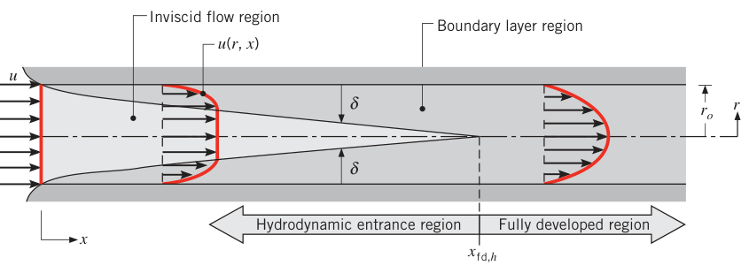
内部流动的雷诺数用平均流速 \(u_m\) 与管径 \(D\) 定义：
充分发展流动中湍流起始的临界雷诺数为
但要达到完全湍流状态，雷诺数还要大得多（约 \(Re_D \approx 10\,000\)）；转捩往往从入口段发展中的边界层里开始。
层流（\(Re_D \lesssim 2300\)）的流动入口段长度取
这个式子默认流体从收敛喷嘴进入、入口速度剖面近乎均匀（图 8.1 的情形）。湍流没有令人满意的通用入口段公式，但已知它与雷诺数基本无关，一阶近似取
工程计算里，取 \(x/D \approx 10\) 就认为湍流已经充分发展。
8.1.2 平均流速#
管内速度沿截面变化，又没有明确的自由流速度，所以必须用平均流速（mean velocity）\(u_m\)：它乘上密度与截面积，恰好等于质量流量：
对等截面管内的稳态不可压流动，\(\dot m\) 与 \(u_m\) 都不随 \(x\) 变。圆管（\(A_c = \pi D^2/4\)）里雷诺数可用流量直接算：
这是内部流动最常用的雷诺数形式——题目往往只给流量。反过来，\(u_m\) 也可以从速度剖面积分出来。把质量流量写成质量流量的截面积分：
比较式 (8.5) 与 (8.7)，圆管的平均流速为
知道任意截面的 \(u(r)\)，就能算出该处的 \(u_m\)。
8.1.3 充分发展区的速度剖面#
不可压、常物性流体在圆管充分发展区做层流时，速度剖面可以精确解出来。流动充分发展的标志是径向速度与轴向速度梯度处处为零：
于是轴向速度只依赖 \(r\)，即 \(u(x,r) = u(r)\)。此时动量通量处处为零，动量守恒退化成剪应力与压力的简单平衡。对图 8.2 的环形微元做力平衡：
取 \(y = r_o - r\)，牛顿黏性定律（式 6S.10）写成
代入式 (8.10)：
轴向压强梯度与 \(r\) 无关，积分两次：
边界条件有两条：壁面无滑移 \(u(r_o) = 0\)，以及轴线对称 \(\partial u/\partial r|_{r=0} = 0\)（后者要求 \(C_1 = 0\)，否则 \(\ln r\) 在轴线上发散）。定出常数：
充分发展速度剖面是抛物线（图 8.2）。压强梯度必定为负——压强沿流动方向下降，这正是驱动流动的东西。
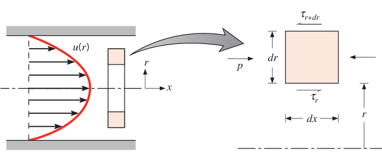
把式 (8.13) 代入式 (8.8) 积分，得平均流速：
再代回式 (8.13)，速度剖面有了最常用的形态：
轴线速度是平均速度的两倍。流量已知时，式 (8.14) 反过来给压强梯度。
拓展：这就是哈根–泊肃叶流动
式 (8.13)–(8.15) 描述的就是流体力学里的哈根–泊肃叶流动（Hagen–Poiseuille flow）。它是一组少有的纳维–斯托克斯方程精确解：充分发展假设把非线性对流项 \(u\partial u/\partial x + v\partial u/\partial r\) 整个干掉了（两项都含 \(v=0\) 或 \(\partial u/\partial x = 0\)），方程线性化，剩下的就是"压强梯度 vs 黏性剪切"的平衡。流量与压降成正比、与黏度成反比（\(u_m \propto \Delta p\, D^2/\mu L\)），这是毛细管黏度计的原理。
8.1.4 充分发展流动的压降与摩擦因子#
压降决定泵或风机的功率，工程师必须会算。方便的无量纲参数是穆迪摩擦因子（Moody friction factor），也叫达西摩擦因子（Darcy friction factor）：
别把它和摩擦系数（friction coefficient，即范宁摩擦因子，Fanning friction factor）搞混：
两者差 4 倍，查图表时先看清是哪一种。由 \(\tau_s = -\mu(du/dr)|_{r=r_o}\) 与式 (8.13)，壁面剪应力为
把式 (8.1)、(8.14) 代入式 (8.16)，充分发展层流的摩擦因子为
湍流的分析复杂得多，只能靠实验。摩擦因子除与 \(Re_D\) 有关外，还随管壁粗糙度 \(e\) 增大。Colebrook 把大范围实验数据整理成超越方程：
光滑管的宽雷诺数范围关联式由 Petukhov 给出：
式 (8.19) 与 (8.20) 画在一起就是穆迪图（Moody diagram，图 8.3）：层流区一条 \(64/Re_D\) 直线，转捩后按相对粗糙度 \(e/D\) 分成一族曲线。
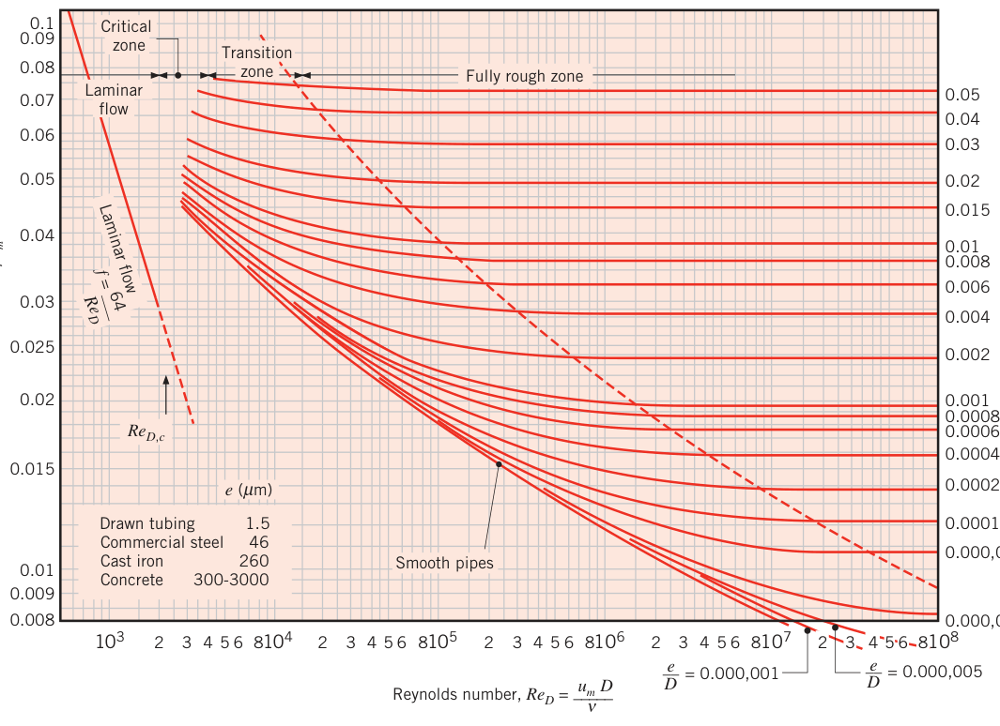
充分发展区里 \(f\) 为常数，因而 \(dp/dx\) 也是常数。从 \(x_1\) 到 \(x_2\) 的压降为
\(f\) 层流取式 (8.19)，湍流取式 (8.20) 或 (8.21)（或查图 8.3）。克服这个压降所需的泵/风机功率：
其中体积流量 \(\dot\forall = \dot m/\rho\)。
拓展：摩擦关联式的物性取温
本章小结的表 8.4 脚注藏着一条易错规则：\(Nu\) 类关联式（8.53、8.55、8.60–8.62、8.64、8.65）的物性按平均温度 \(T_m\) 取；摩擦因子关联式（8.19、8.20、8.21）的物性按膜温 \(T_f = (T_s + T_m)/2\) 取；入口段关联式（8.57、8.58）按进出口平均 \(\overline{T}_m = (T_{m,i}+T_{m,o})/2\) 取。物性抄错温度，结果系统性偏差。
8.2 热问题#
流体以均匀温度 \(T(r,0)\) 进管，壁面温度更高，对流换热发生，热边界层开始生长（图 8.4）。壁面条件固定为均匀壁温（\(T_s\) 为常数）或均匀热流（\(q_s''\) 为常数）之一后，热充分发展状态终会达到。两类边界下充分发展温度剖面的形状不同，但共同点是：流体温度相对入口温度的超出量随 \(x\) 一直增大。
层流的热入口段长度：
对比式 (8.3)：\(Pr > 1\) 时流动边界层比热边界层长得快（\(x_{fd,h} < x_{fd,t}\)），\(Pr < 1\) 时反过来。对油类这类大 \(Pr\) 流体，\(x_{fd,h} \ll x_{fd,t}\)——整个热入口段里速度剖面早已充分发展，这个假设非常合理。湍流则几乎与 \(Pr\) 无关，一阶近似取 \(x_{fd,t}/D \approx 10\)。
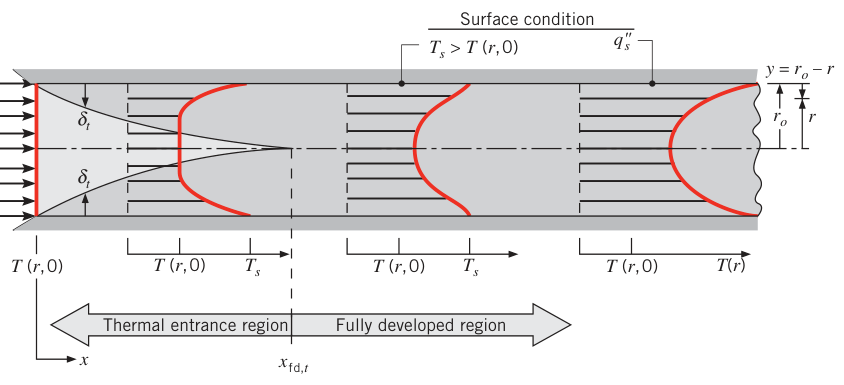
8.2.1 平均温度#
没有自由流温度，就得用平均温度（mean temperature，也叫整体温度 bulk temperature）\(T_m\) 当参考。回顾稳流热能方程（式 1.12e）：\(q = \dot m c_p(T_{out} - T_{in})\)，它默认进出口截面温度均匀——有换热时并不成立。所以这样定义 \(T_m\)：让 \(\dot m c_p T_m\) 恰好等于截面上真实的对流（平流）热能输运率：
圆管内 \(\rho\)、\(c_p\) 为常数时，用式 (8.5) 与 (8.25)：
\(T_m\) 乘上 \(\dot m c_p\) 就是流体沿管携带的焓（热能）输运速率——它是内部流动的"体温"。
拓展：\(T_m\) 是能量加权平均，不是算术平均
式 (8.25) 里温度被"质量通量 \(\rho u\)"加权：轴线流速最高，那里的流体对 \(T_m\) 话语权最大；贴壁低速流体权重小。所以 \(T_m\) 一般不等于截面温度的算术平均。它也不是几何中心的温度——它是"把整管流体倒进杯子搅匀后测到的温度"，这正是热力学能量账本上该记的那个温度。
8.2.2 牛顿冷却公式#
\(T_m\) 在内部流动中的角色，相当于外流的自由流温度 \(T_\infty\)。牛顿冷却公式写作：
\(h\) 是局部对流换热系数。但 \(T_m\) 与 \(T_\infty\) 有本质区别：\(T_\infty\) 沿流动方向不变，\(T_m\) 必须沿程变——只要有换热，\(dT_m/dx\) 就不为零。流体被加热（\(T_s > T_m\)）时 \(T_m\) 沿 \(x\) 升高，被冷却则降低。
8.2.3 热充分发展条件#
既然换热要求流体温度沿 \(x\) 一直变，"热充分发展"还可能达到吗？可能——诀窍是跟第 5、6 章一样改用无量纲温度。定义无量纲温差 \((T_s - T)/(T_s - T_m)\)，实验与理论都表明：这个比值可以变得与 \(x\) 无关。温度剖面 \(T(r)\) 本身还在变，但相对形状不再变，流动即达到热充分发展：
这个条件在恒热流（\(q_s''\) 为常数）或恒壁温（\(T_s\) 为常数）的管内终会达到。两类边界都常见：管壁电加热或表面受均匀辐照 → 恒热流；外壁发生相变（沸腾、凝结）→ 恒壁温。注意恒热流与恒壁温不可能同时成立：\(q_s''\) 不变则 \(T_s\) 必须沿程变，\(T_s\) 不变则 \(q_s''\) 必须沿程变。
从式 (8.28) 能读出热充分发展流的几条关键性质。比值与 \(x\) 无关，它对 \(r\) 的偏导也与 \(x\) 无关。在壁面处求导（对 \(r\) 求导时 \(T_s\)、\(T_m\) 是常数）：
把傅里叶定律（\(q_s'' = -k\,\partial T/\partial y|_{y=0} = k\,\partial T/\partial r|_{r=r_o}\)）与牛顿冷却公式（式 8.27）代进去，得到
结论：常物性流体热充分发展时，局部换热系数是常数，与 \(x\) 无关。式 (8.28) 在入口段不成立，那里的 \(h\) 随 \(x\) 变化：入口处热边界层厚度为零，\(h\) 极大，随后随边界层增厚迅速衰减，直到充分发展区的常值（图 8.5）。
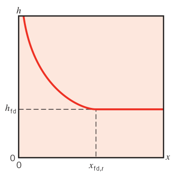
均匀热流是特例，还有额外简化。充分发展区 \(h\) 与 \(q_s''\) 都是常数，由式 (8.27) 立刻有
把式 (8.28) 展开解出 \(\partial T/\partial x\)：
代入式 (8.30)：
恒温梯度与径向位置无关。恒壁温（\(dT_s/dx = 0\)）时由式 (8.31) 反而得到
此时 \(\partial T/\partial x\) 依赖径向坐标 \(r\)。两类边界的差异从这里开始，一直贯穿到后面的温度分布与 \(Nu\)。
\(T_m\) 沿程怎么变，是内部流动分析的核心问题——答案在 8.3 节的能量平衡里。
【例 8.1】液态金属管流的努塞尔数
已知（Known）：液态金属流过圆管，某轴向位置处速度剖面近似均匀、温度剖面近似抛物线：\(u(r) = C_1\)，\(T(r) - T_s = C_2[1-(r/r_o)^2]\)，\(C_1\)、\(C_2\) 为常数。
求（Find）：该位置的努塞尔数 \(Nu_D\)。
示意图（Schematic）：
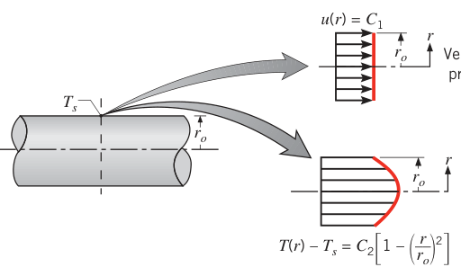
假设（Assumptions）：不可压、常物性流动。
分析（Analysis）：先求换热系数，由式 (8.27)：
平均温度由式 (8.26) 计算（\(u_m = C_1\)，由式 8.8）：
（积分 \(\int_0^{r_o}[1-(r/r_o)^2]\,r\,dr = r_o^2/4\)，故 \(T_m = T_s + C_2/2\)。）热流密度由傅里叶定律：
于是
点评（Comments）：均匀速度 + 抛物线温度的组合给出 \(Nu_D = 8\)。对比 8.4 节的严格结果（抛物线速度 + 恒热流 \(Nu_D = 4.36\)），速度剖面形状对 \(Nu\) 的影响一目了然：液态金属 \(Pr \ll 1\)，热扩散远快于动量扩散，温度剖面比速度剖面"厚"，均匀速度假设反而更接近真实。
8.3 能量平衡#
8.3.1 一般考虑#
管流完全封闭，正好套能量守恒。对图 8.6 的控制体（整个管段或一段微元）应用稳流热能方程（式 1.12e，四条适用假设之一：不可压液体或低压强变化理想气体 + 黏性耗散可忽略），并忽略轴向导热（通常合理），热量项只含对流换热。对长 \(L\) 的整管：
这个总能量平衡把三个热变量（\(q_{conv}\)、\(T_{m,o}\)、\(T_{m,i}\)）连在一起，与壁面条件、管内流动状况无关，是万能的第一把钥匙。
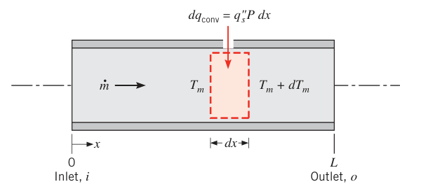
对微元控制体（图 8.6 中虚线框）应用同一平衡，利用 \(T_m\) 的定义（\(\dot m c_p T_m\) 是真实平流输运率）：
微元从壁面得到的对流换热可写成 \(dq_{conv} = q_s''\, P\, dx\)，\(P\) 是表面周长（圆管 \(P = \pi D\)）。代入式 (8.27)：
这是求 \(T_m(x)\) 的主方程。\(T_s > T_m\) 时流体升温，反之降温。右端各量沿程的行为：\(P\) 通常为常数；\(h\) 只在充分发展区为常数，入口段随 \(x\) 下降；\(T_s\) 可以为常数，\(T_m\) 必然随 \(x\) 变（除非不换热）。
8.3.2 恒表面热流#
恒热流时总换热量最好算——\(q_s''\) 沿程不变：
配合式 (8.34) 立刻得到进出口温升。而式 (8.37) 中 \(h(T_s - T_m) = q_s''\) 为常数，于是
从 \(x = 0\) 积分：
平均温度沿管长线性上升（图 8.7a）。温差 \((T_s - T_m)\) 呢？入口段 \(h\) 很大，温差起点小；随后 \(h\) 衰减，温差拉大；进入充分发展区后 \(h\) 为常数，由式 (8.27) \((T_s - T_m) = q_s''/h\) 也是常数。热流已知但不是常数（例如 \(q_s''(x)\)）时，式 (8.37) 照样积分，总热量由 \(q_{conv} = \int_0^L q_s''(x)P\, dx\) 给出。
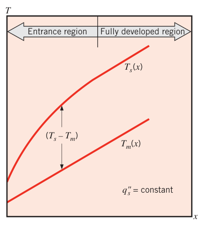
【例 8.2】电加热厚壁管的长度与出口换热系数
已知（Known）：水从 \(T_{m,i} = 20^\circ\mathrm{C}\) 加热到 \(T_{m,o} = 60^\circ\mathrm{C}\)。水管内径 20 mm、外径 40 mm，外表面绝热，管壁内电加热提供均匀生成率 \(\dot q = 10^6\ \mathrm{W/m^3}\)。
求（Find）：1. 达到出口温度所需管长 \(L\)；2. 出口处内表面温度 \(T_s = 70^\circ\mathrm{C}\) 时，出口的局部对流换热系数。
示意图（Schematic）：
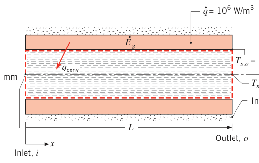
假设（Assumptions）：1. 稳态；2. 热流均匀；3. 不可压液体、黏性耗散可忽略；4. 常物性；5. 管外表面绝热。
物性（Properties）：表 A.6，水（\(T_m = 313\ \mathrm{K}\)）：\(c_p = 4179\ \mathrm{J/(kg\cdot K)}\)。
分析（Analysis）：
- 外表面绝热，管壁内生成的能量全部对流交给水。生成率为 \(\dot E_g = \dot q\,\frac{\pi}{4}(D_o^2 - D_i^2)L\)，令其等于 \(q_{conv}\)（式 8.34）：
- 由牛顿冷却公式（式 8.27），出口局部换热系数 \(h_o = q_s''/(T_{s,o} - T_{m,o})\)。壁内均匀生成对应恒热流，内表面热流密度为
点评（Comments）：
- 若全管充分发展，\(h\) 与 \((T_s - T_m)\) 都与 \(x\) 无关：\(h = 1500\ \mathrm{W/(m^2\cdot K)}\)、\((T_s - T_m) = 10^\circ\mathrm{C}\) 沿程不变，进口内表面温度 \(T_{s,i} = 30^\circ\mathrm{C}\)。
- 管长也可以把式 (8.40) 用在 \(x = L\) 处算出——两条路等价。
8.3.3 恒表面温度#
恒壁温下结果完全不同。令 \(\Delta T \equiv T_s - T_m\)，式 (8.37) 变成
分离变量、从进口积到出口：
按平均换热系数定义（式 6.13，\(\bar h_L = \frac{1}{L}\int_0^L h\, dx\)）：
积到管内任意位置 \(x\)（\(\bar h\) 为进口到 \(x\) 的平均值），得到更一般的形式：
温差 \((T_s - T_m)\) 沿管长指数衰减——壁温与流体温度指数逼近，壁温是渐近线（图 8.7b）。
总换热量要把 \(q_s''\) 沿程积分，麻烦在指数衰减。把式 (8.34) 写成
再把式 (8.41a) 的关系代进去，整理出
其中 \(A_s = P\cdot L\) 是管内表面积，\(\Delta T_{lm}\) 是对数平均温差（log mean temperature difference）：
式 (8.43) 是整管的牛顿冷却公式，\(\Delta T_{lm}\) 是温差沿管长的正确平均。之所以是"对数"平均而不是算术平均 \(\Delta T_{am} = (\Delta T_i + \Delta T_o)/2\)，根源就是温差按指数衰减。
许多应用里固定的是外部流体的温度而不是管壁温度（图 8.8）：把 \(T_s\) 换成外流温度 \(T_\infty\)、\(\bar h\) 换成总传热系数（overall heat transfer coefficient）\(\bar U\) 即可，其余照旧：
\(\bar U A_s\) 按内表面（\(\bar U_i A_{s,i}\)）或外表面（\(\bar U_o A_{s,o}\)）定义结果相同（式 3.37），而 \((\bar U A_s)^{-1}\) 就是两流体之间的总热阻，于是又有热阻形式：
另一常见变体：已知的是外壁均匀温度 \(T_{s,o}\) 而非外流温度——把 \(T_\infty\) 换成 \(T_{s,o}\)，\(R_{tot}\) 里含内流对流热阻与从内表面到 \(T_{s,o}\) 表面之间的导热热阻。
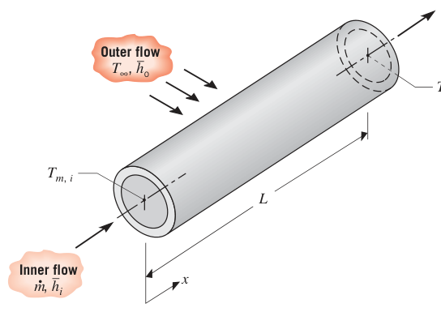
拓展：对数平均温差的来历
\(\Delta T_{lm}\) 不是拍脑袋的平均，而是"温差对 \(x\) 指数衰减"时热流方程的精确积分结果：\(q_{conv} = \int_0^L hP\Delta T\, dx\)，把 \(\Delta T(x) = \Delta T_i\, e^{-\beta x}\) 代入积分，自然出现 \((\Delta T_o - \Delta T_i)/\ln(\Delta T_o/\Delta T_i)\)。算术平均只有在 \(\Delta T_o/\Delta T_i \to 1\)（温差几乎不变）时才近似成立；进出口温差差一倍以上时，用算术平均的误差就很可观。这个量在换热器设计（第 11 章）里是主角。
【例 8.3】蒸汽凝结加热水的平均换热系数
已知（Known）：蒸汽在薄壁圆管（\(D = 50\ \mathrm{mm}\)，\(L = 6\ \mathrm{m}\)）外表面凝结，维持均匀壁温 \(100^\circ\mathrm{C}\)。水以 \(\dot m = 0.25\ \mathrm{kg/s}\) 流过管内，进、出口温度 \(T_{m,i} = 15^\circ\mathrm{C}\)、\(T_{m,o} = 57^\circ\mathrm{C}\)。
求（Find）：水侧平均对流换热系数。
示意图（Schematic）：
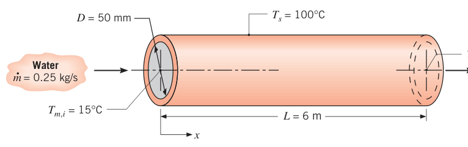
假设（Assumptions）：1. 管壁导热热阻可忽略；2. 不可压液体、黏性耗散可忽略；3. 常物性。
物性（Properties）：表 A.6，水（\(\overline{T}_m = 36^\circ\mathrm{C} = 309\ \mathrm{K}\)）：\(c_p = 4178\ \mathrm{J/(kg\cdot K)}\)。
分析（Analysis）：联立总能量平衡（式 8.34）与整管速率方程（式 8.43）：
对数平均温差（式 8.44，\(\Delta T_i = 100 - 15 = 85^\circ\mathrm{C}\)，\(\Delta T_o = 100 - 57 = 43^\circ\mathrm{C}\)）：
点评（Comments）：若全管充分发展，局部换热系数处处等于这个平均值 755 W/(m²·K)——恒壁温充分发展时 \(h\) 确实是常数。
8.4 圆管层流：热分析与对流关联式#
前面所有结果都要用换热系数，本节对层流圆管做理论求解。湍流与非圆管的关联式在后续各节。
8.4.1 充分发展区#
对图 8.9 的环形微元应用稳流热能方程（式 1.12e）。充分发展区径向速度为零，径向控制面上没有平流，热的进出只靠径向导热；轴向靠平流输运。轴向微元质量流量 \(dm = \rho u\, 2\pi r\, dr\)，径向导热 \(q_r = -k(\partial T/\partial r)\, 2\pi r\, dx\)，能量平衡为
化简（常物性）：
即径向导热与轴向平流的平衡，等价形式：
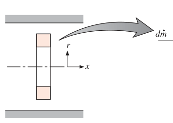
先解恒热流。此时轴向导热净值为零的假设严格成立（\(\partial^2 T/\partial x^2 = 0\)）。把 \(\partial T/\partial x\) 用式 (8.32)、\(u\) 用式 (8.15) 代入式 (8.48)：
\(T_m(x)\) 随 \(x\) 线性变化，\((2u_m/\alpha)(dT_m/dx)\) 是常数。分离变量、积分两次：
边界条件：\(r = 0\) 处温度有限 → \(C_1 = 0\)（否则 \(\ln r\) 发散）；\(T(r_o) = T_s\) → \(C_2 = T_s(x) - \frac{2u_m}{\alpha}\left(\frac{dT_m}{dx}\right)\frac{3r_o^2}{16}\)。于是恒热流充分发展区的温度剖面为
速度剖面（8.15）与温度剖面（8.50）一起代入式 (8.26) 积分，得平均温度：
用式 (8.39)（\(P = \pi D\)，\(\dot m = \rho u_m(\pi D^2/4)\)）把 \((u_m r_o^2/\alpha)(dT_m/dx)\) 换成 \(q_s'' D/k\)：
温差与 \(x\) 无关——这正是充分发展的表现。与牛顿冷却公式（式 8.27）联立：
均匀热流、层流充分发展的圆管：努塞尔数是常数，与 \(Re_D\)、\(Pr\)、轴向位置统统无关。
再解恒壁温。忽略轴向导热的假设通常也合理。把速度剖面（式 8.15）与轴向温度梯度（式 8.33）代入能量方程：
方程非线性（\(T\) 自己出现在右端），只能逐次逼近迭代求解，温度剖面没有简单的代数表达式，但努塞尔数有：
用式 (8.53) 或 (8.55) 算 \(h\) 时，导热系数按 \(T_m\) 取值。
拓展：为什么层流充分发展的 Nu 是常数
看式 (8.49)：等号左端是温度剖面的径向二阶导，右端是 \((2u_m/\alpha)(dT_m/dx)[1-(r/r_o)^2]\)。恒热流时右端整体是常数——方程里没有任何 \(Re\)、\(Pr\) 的影子（\(dT_m/dx\) 由能量平衡定、被 \(q_s''\) 消掉）。无量纲化后解只依赖"边界条件类型"，于是 \(Nu\) 只剩两个可能的常数：4.36（恒热流）与 3.66（恒壁温）。恒热流的 \(Nu\) 更大，因为它的无量纲温度剖面更"鼓"——壁面附近梯度更陡。这也是为什么热充分发展的层流换热"物性定了就定了"，跟流速无关——流速只改温差大小，不改 \(Nu\)。
【例 8.4】血液在血管里什么时候达到组织温度
已知（Known）：血液从心脏进入逐级分叉、直径递减的血管。Pennes 建立生物热方程（3.7 节）时假设血液以动脉温度进入毛细血管、以组织温度离开。本题检验这个假设。三类血管的直径与平均血流速度如下表。求使平均血温接近组织温度、满足判据 \((T_t - T_{m,o})/(T_t - T_{m,i}) = 0.05\) 所需的管长。血管壁与组织之间的换热用有效换热系数 \(h_t = k_t/D\) 描述，\(k_t = 0.5\ \mathrm{W/(m\cdot K)}\)。
| 血管 | 直径 \(D\) (mm) | 血流速度 \(u_m\) (mm/s) |
|---|---|---|
| 大动脉（large artery） | 3 | 130 |
| 微动脉（arteriole） | 0.02 | 3 |
| 毛细血管（capillary） | 0.008 | 0.7 |
求（Find）：血液是否在毛细血管内才达到组织温度（Pennes 假设是否成立）。
示意图（Schematic）：
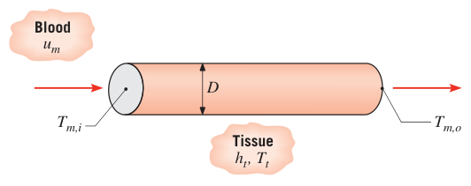
假设（Assumptions）：1. 稳态；2. 常物性；3. 血管壁导热热阻可忽略；4. 血液热物性用水近似；5. 血液是不可压液体、黏性耗散可忽略；6. 组织温度恒定；7. 流动脉动的影响可忽略。
物性（Properties）：表 A.6，水（\(\overline{T}_m = 310\ \mathrm{K}\)）：\(\rho = 993\ \mathrm{kg/m^3}\)，\(c_p = 4178\ \mathrm{J/(kg\cdot K)}\)，\(\mu = 695\times 10^{-6}\ \mathrm{N\cdot s/m^2}\)，\(k = 0.628\ \mathrm{W/(m\cdot K)}\)，\(Pr = 4.62\)。
分析（Analysis）：组织温度恒定、壁面与组织间用有效换热系数，正好套式 (8.45a)（"自由流"温度取 \(T_t\)）。先求总传热系数 \(\bar U\)，需要血流侧换热系数 \(h_b\)。
大动脉：雷诺数
层流（其余两类血管直径更小、速度更低，自然也是层流）。边界既非恒壁温也非恒热流，近似取 \(Nu_D \approx 4\)，即 \(h_b = 4k_b/D\)。忽略血管壁热阻，大动脉的总热阻与 \(\bar U\)：
满足判据的管长由式 (8.45a) 解出（\(\dot m = \rho u_m \pi D^2/4\)）：
入口段长度（式 8.3 与 8.23）：
8.7 m 的长度里流动早就充分发展。另外两类血管同法计算，结果汇总：
| 血管 | \(Re_D\) | \(\bar U\) (W/m²·K) | \(L\) (m) | \(x_{fd,h}\) (m) | \(x_{fd,t}\) (m) |
|---|---|---|---|---|---|
| 大动脉 | 557 | 140 | 8.7 | 0.08 | 0.4 |
| 微动脉 | 0.086 | 21 000 | \(8.9\times 10^{-6}\) | \(9\times 10^{-8}\) | \(4\times 10^{-7}\) |
| 毛细血管 | 0.0080 | 52 000 | \(3.3\times 10^{-7}\) | \(3\times 10^{-9}\) | \(1\times 10^{-8}\) |
大动脉的 \(L\) 极大——直径大、总传热系数小，血温基本维持在动脉温度。微动脉里血温在约 10 μm 量级的长度上就逼近组织温度，而微动脉本身有毫米量级长，所以进入毛细血管的血液已经与组织同温，毛细血管里不再有温降。结论：血液与组织温度的平衡发生在微动脉和稍大的血管里，而不是 Pennes 假设的毛细血管里。
点评（Comments）：
- 血液物性与水最接近的差别是黏度（血液更黏）。这不影响结论：黏度更高只会让 \(Re_D\) 更小，流动照样层流，换热不受影响。
- 血细胞尺寸与毛细血管同量级。要精确建模毛细血管内的血流，得把"单个细胞 + 血浆"分别处理。
- 尽管 Pennes 的假设有瑕疵，生物热方程仍是分析人体传热的有用工具。
8.4.2 入口段#
前面结果只在速度、温度剖面都充分发展时有效（判据即式 8.3、8.23）。任一剖面未充分发展，流动就处在入口段。入口段能量方程比式 (8.48) 复杂：多出径向平流项（\(v \ne 0\)），且 \(u\)、\(T\) 同时依赖 \(x\) 与 \(r\)，轴向温度梯度不能再套式 (8.32)/(8.33)。入口段有两类解：
- 热入口段问题（thermal entry length problem）：热边界层在已充分发展的速度剖面上生长。出现在换热段之前有一段未加热起始段（unheated starting length），或大 \(Pr\) 流体（如油类，速度边界层长得远快于热边界层）的情形。
- 组合入口段问题（combined entry length problem）：温度与速度剖面同时发展。
绝不可能是"热已充分发展、流动还在发展"——温度分布依赖速度分布，速度没定，热状态谈不上充分发展。
两类入口段解的结果见图 8.10。局部 \(Nu_D\) 在 \(x = 0\) 处理论上无穷大，随 \(x\) 衰减到充分发展值。横坐标是无量纲参数 \(x/(u_m D^2) = x/(D\, Re_D Pr)\)，即格雷茨数的倒数：
格雷茨数（Graetz number）。热入口段问题的 \(Nu_D\) 随 \(Gz_D^{-1}\) 的变化与 \(Pr\) 无关（充分发展速度剖面式 8.13 不含黏度）；组合入口段的结果则依赖速度剖面怎么发展、对黏度敏感，所以依赖 \(Pr\)（图 8.10a 画的是 \(Pr = 0.7\)，代表大多数气体）。入口段内同一位置，\(Nu_D\) 随 \(Pr\) 增大而减小，\(Pr \to \infty\) 时趋于热入口段解。充分发展在 \([(x/D)/(Re_D Pr)] \approx 0.05\) 处达到。
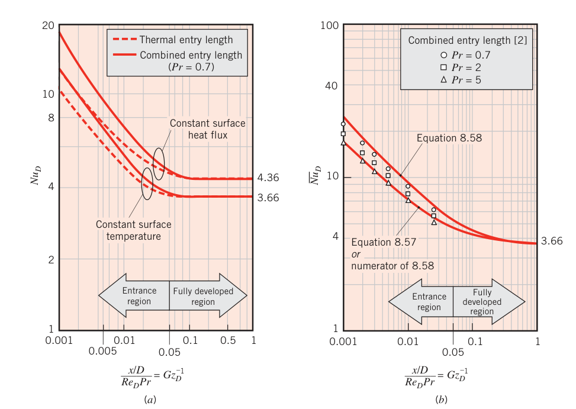
恒壁温时通常要的是平均换热系数（配式 8.42 或 8.43 用）。选式看是哪类入口段：
热入口段（Hausen 关联式）：
其中 \(Gz_D = (D/x)Re_D Pr\)，\(\overline{Nu}_D = \overline{h}D/k\) 是从进口到 \(x\) 的平均值。只要速度剖面已充分发展就适用。从图 8.10b 看，\(Pr \gtrsim 5\) 时热入口段近似与组合入口段解吻合良好。
组合入口段（Baehr–Stephan 关联式，\(Pr \gtrsim 0.1\)）：
式 (8.58) 取 \(Pr = 0.7\) 画在图 8.10b 上，与组合入口段精确解的数据点吻合良好。\(Pr \to \infty\) 时分母趋于 1，分子即热入口段解，在 \(0.006 \le Gz_D^{-1} \le 1\) 范围内与 Hausen 关联式相差不到 3%。式 (8.57)、(8.58) 的物性按进出口平均温度 \(\overline{T}_m = (T_{m,i} + T_{m,o})/2\) 取。
拓展：Graetz 问题
"圆管层流入口段在指定壁温下的换热"是传热学的经典问题，19 世纪 80 年代 Graetz 首先求解，得名 Graetz 问题。\(Gz_D\) 衡量"对流输运能力 vs 径向扩散能力"：\(Gz_D\) 大（入口不远处，或流速快），温度剖面还没来得及发展，\(Nu\) 高；\(Gz_D\) 小，剖面成熟，\(Nu\) 落到充分发展值。Hausen 式 (8.57) 正是"充分发展值 3.66 + 入口段修正项"的结构：\(Gz_D \to 0\) 时修正项消失，\(Nu = 3.66\)。
层流管流的研究非常充分，各种截面形状与表面条件的结果汇集在 Shah 与 London 的专著（以及 Shah 与 Bhatti 的综述）里；非圆管组合入口段的关联式由 Muzychka 与 Yovanovich 发展。
8.4.3 温度相关物性#
\(T_s\) 与 \(T_m\) 相差大、流体物性随之显著变化时，式 (8.53)、(8.55)、(8.57)、(8.58) 算出的 \(Nu\) 会失真。气体影响通常小；液体（尤其油类）黏度随温度变化剧烈——黏度变化改变径向速度分布，进而改变温度分布，最终改变 \(Nu\)。对液体，把关联式结果乘一个修正因子：
\(Nu_{D,c}\) 是修正后的努塞尔数，\(Nu_D\) 来自式 (8.53)、(8.55)、(8.57) 或 (8.58)；物性全部按 \(\overline{T}_m\) 取，唯独 \(\mu_s\) 按壁温 \(T_s\) 取。这个修正对层流圆管（充分发展或入口段都行）与非圆管都可用。
8.5 圆管湍流对流关联式#
湍流分析太复杂，重点放在经验关联式上。光滑圆管、流体力学与热都充分发展的湍流，局部努塞尔数用 Dittus-Boelter 关联式：
指数约定：流体被加热（\(T_s > T_m\)）取 \(n = 0.4\)；流体被冷却（\(T_s < T_m\)）取 \(n = 0.3\)。实验确认的适用范围：
中小温差（\(T_s - T_m\) 不大）下可用，物性按 \(T_m\) 取。温差大、物性变化剧烈时用 Sieder-Tate 关联式：
物性除 \(\mu_s\)（按 \(T_s\) 取）外都按 \(T_m\) 取。式 (8.60)、(8.61) 对恒壁温与恒热流都可用（一阶近似）。这些关联式好用，但误差可高达 25%。更精确（也复杂）的关联式可把误差压到 10% 以内。Gnielinski 关联式适用于光滑管的大雷诺数范围（含过渡区）：
\(f\) 由穆迪图或式 (8.21) 取；恒热流与恒壁温通用，物性按 \(T_m\) 取。
拓展：Dittus-Boelter 的「原名」另有其式
脚注里的历史彩蛋：式 (8.60) 流行叫"Dittus-Boelter 方程"，但 Dittus 与 Boelter 1930 年的原始式其实是 \(Nu_D = 0.0243\, Re_D^{4/5} Pr^{0.4}\)（加热）与 \(Nu_D = 0.0265\, Re_D^{4/5} Pr^{0.3}\)（冷却）——系数不是 0.023。现在通行的 0.023 版本源自 McAdams 等人的整理。Winterton (1998) 专门写过这篇"方程名与方程对不上"的考证。记结论即可：考试与工程都用 0.023 版。
三条工程注意事项：
- 过渡区慎用湍流式。除非关联式明确为过渡区（\(2300 \le Re_D \le 10^4\)）开发，\(Re_D \lesssim 10^4\) 时别乱套。为完全湍流（\(Re_D \gtrsim 10^4\)）开发的式子在小 \(Re_D\) 下只能当一阶近似用，且知道 \(h\) 会被高估。要精度就用 Gnielinski（式 8.62 下限 3000）。
- 粗糙管。式 (8.60)–(8.62) 都是光滑管的。粗糙管湍流的 \(h\) 随粗糙度增大；一阶近似：仍用式 (8.62)，但 \(f\) 按式 (8.20) 或穆迪图取。总趋势是 \(h\) 随 \(f\) 增大，但 \(f\) 的增幅比例更大——\(f\) 增到光滑管约 4 倍后，\(h\) 不再随 \(f\) 变化。
- 入口段。湍流入口段很短（\(10 \lesssim x_{fd}/D \lesssim 60\)），通常整管平均 \(Nu\) 直接取充分发展值（\(\overline{Nu}_D \approx Nu_{D,fd}\)）。短管才需要修正：
\(C\)、\(m\) 取决于入口形式（尖角或喷嘴）、入口段类型（热或组合）、\(Pr\) 与 \(Re_D\)。取 \(\overline{Nu}_D = Nu_{D,fd}\) 在 \(L/D \gtrsim 60\) 时误差小于 15%。求 \(\overline{Nu}_D\) 时物性按 \(\overline{T}_m = (T_{m,i} + T_{m,o})/2\) 取。
液态金属不适用上述任何关联式。充分发展湍流、光滑圆管：恒热流用 Skupinski 关联式：
恒壁温用 Seban–Shimazaki 关联式（\(Pe_D > 100\)）：
其中 \(Pe_D = Re_D Pr\) 是贝克来数（Péclet number）。
【例 8.5】抛物面槽式太阳能电站的聚热管
已知（Known）：抛物面反射器把阳光聚到焦点的吸热管上，管内 concentrator 流体被加热后进换热器把热交给朗肯循环工质，冷却后回流。单个聚热管可近似为表面恒热流：\(q_s'' = 20\,000\ \mathrm{W/m^2}\)（均匀）。流体物性：\(\rho = 700\ \mathrm{kg/m^3}\)，\(k = 0.078\ \mathrm{W/(m\cdot K)}\)，\(c_p = 2590\ \mathrm{J/(kg\cdot K)}\)，\(\mu = 0.15\times 10^{-3}\ \mathrm{N\cdot s/m^2}\)。管径 \(D = 70\ \mathrm{mm}\)，单管质量流量 \(\dot m = 2.5\ \mathrm{kg/s}\)，进口 \(T_{m,i} = 400^\circ\mathrm{C}\)、出口 \(T_{m,o} = 450^\circ\mathrm{C}\)。
求（Find）：1. 聚热管长度 \(L\) 与单管换热量 \(q\)；2. 聚热管出口的管壁温度 \(T_s(L)\)；3. 换热器与冷凝器两端各承担 \(20^\circ\mathrm{C}\) 温差（环境 \(T_\infty = 20^\circ\mathrm{C}\)）时，发出 \(P = 20\ \mathrm{MW}\) 电功率所需的最少聚热管数 \(N\)。
示意图（Schematic）：
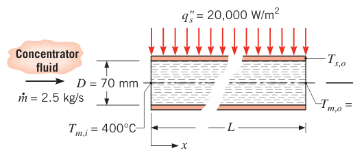
假设（Assumptions）：1. 稳态；2. 不可压液体、黏性耗散可忽略；3. 常物性；4. 管壁薄。
分析（Analysis）：
- 恒热流配能量平衡（式 8.38 与 8.34）：
- 出口壁温由牛顿冷却公式（式 8.27）：\(T_s(L) = q_s''/h + T_{m,o}\)。先判流态：
湍流。普朗特数：
\(L/D = 73.6/0.070 = 1050 \gg 10\)，出口处流动已充分发展。由式 (8.60)（\(n = 0.4\)，流体被加热）：
- 发 \(P = 20\ \mathrm{MW}\) 电所需的最小吸热量由卡诺效率决定：\(\eta_C = 1 - T_{R,min}/T_{R,max}\)，其中 \(T_{R,min} = T_\infty + \Delta T = 293 + 20 = 313\ \mathrm{K}\)，\(T_{R,max} = T_{m,o} - \Delta T = 723 - 20 = 703\ \mathrm{K}\)：
点评（Comments）：
- 若换热器与冷凝器的温差能消掉（\(\Delta T = 0\)），\(\eta_C = 1 - 293/723 = 0.595\)，\(q_{min} = 33.6\ \mathrm{MW}\)、\(N = 104\)。压换热器与冷凝器的热阻，就能少装聚热管、省下投资。
- 实际热效率低于卡诺效率；加州南部的抛物面槽式太阳能电站（SEGS）标称效率约 38%。以"发电功率/集热器截获太阳能"定义的整体效率约 15%（太阳能到热能的转换按 40% 计）。
- 研发不沸腾、夜间不冻、耐更高温度的聚热流体，才能抬高 \(T_{R,max}\)、提高电站效率。
- 热管理与新工质是降低太阳能发电成本的关键。
【例 8.6】住宅地下暖气管道的散热
已知（Known）：热空气以 \(\dot m = 0.050\ \mathrm{kg/s}\) 流过无保温的薄铁皮风管，\(D = 0.15\ \mathrm{m}\)，位于住宅地下设备层。热风入口 \(103^\circ\mathrm{C}\)，流经 \(L = 5\ \mathrm{m}\) 后冷却到 \(85^\circ\mathrm{C}\)。管外表面与 \(T_\infty = 0^\circ\mathrm{C}\) 环境空气间的换热系数 \(h_o = 6\ \mathrm{W/(m^2\cdot K)}\)。
求（Find）：1. 这段风管的热损失 \(q\)（W）；2. \(x = L\) 处的热流密度与风管表面温度。
示意图（Schematic）：
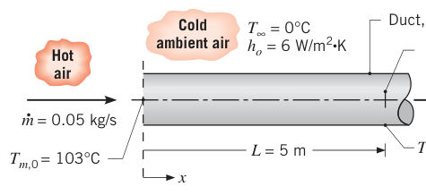
假设（Assumptions）：1. 稳态；2. 常物性；3. 理想气体；4. 黏性耗散与压强变化可忽略；5. 管壁导热热阻可忽略；6. 管外表面对流换热系数均匀；7. 辐射可忽略。
物性（Properties）：表 A.4，空气（\(\overline{T}_m = 367\ \mathrm{K}\)）：\(c_p = 1011\ \mathrm{J/(kg\cdot K)}\)。表 A.4，空气（\(T_{m,L} = 358\ \mathrm{K}\)）：\(k = 0.0306\ \mathrm{W/(m\cdot K)}\)，\(\mu = 211.7\times 10^{-7}\ \mathrm{N\cdot s/m^2}\)，\(Pr = 0.698\)。
分析（Analysis）：
- 整管能量平衡（式 8.34）：
热损失 910 W（负号表示热风放热）。
- \(x = L\) 处的热流密度从热阻网络来：管内对流热阻 \(1/h_x(L)\) 与管外对流热阻 \(1/h_o\) 串联，\(\Delta T\) 为 \(T_{m,L} - T_\infty\)：
管内局部换热系数由雷诺数决定：
湍流。\(L/D = 5/0.15 = 33.3\)，\(x = L\) 处可按充分发展处理。热风被管壁冷却（\(T_s < T_m\)），取 \(n = 0.3\)，由式 (8.60)：
管壁热阻为零，\(T_{s,L} = T_{m,L} - q_s''/h_x\)：
点评（Comments）：
- 整管能量平衡里 \(c_p\) 按 \(\overline{T}_m = (103 + 85)/2 = 94^\circ\mathrm{C}\)（367 K）取；关联式求局部 \(h\) 时物性按当地平均温度 \(T_{m,L} = 85^\circ\mathrm{C}\)（358 K）取。两套取温规则并存。
- 总平均传热系数 \(\bar U\) 可由式 (8.45a) 反解：
由假设 6 知 \(h_o = \bar U\)，于是管内平均换热系数 \(\bar h_i = 1/(1/\bar U - 1/h_o) = 13.2\ \mathrm{W/(m^2\cdot K)}\)。它大于出口局部值 \(h_x(L) = 11.5\ \mathrm{W/(m^2\cdot K)}\)，与式 (8.63)（短管平均大于充分发展值）的预期一致——本题 \(L/D = 33.3\)，入口段贡献还在。 3. 本题既非恒壁温也非恒热流。若错把出口热流当成沿程不变，总热损失会算成 \(q_s''(L)\,\pi D L = 790\ \mathrm{W}\)，比真实值 910 W 小不少——因为 \(q_s''(x)\) 沿程下降（\(h_x\) 与 \([T_m(x) - T_\infty]\) 都在降）。
8.6 非圆管与同心套管环形通道#
8.6.1 非圆管：水力直径#
很多工程流道不是圆的。一阶近似下，把圆管结果的特征长度换成水力直径（hydraulic diameter）就能沿用：
其中 \(A_c\) 是流动截面面积，\(P\) 是湿周（wetted perimeter，与流体接触的周长）。算 \(Re_D\)、\(Nu_D\) 都用 \(D_h\)。
湍流（\(Re_{D_h} \gtrsim 2300\) 时照旧发生）：\(Pr \gtrsim 0.7\) 时直接用 8.5 节的关联式。注意非圆管截面上换热系数沿周向变化、角区趋近于零，圆管关联式给出的是周长平均值。
层流：圆管关联式误差较大，尖角截面尤甚。充分发展的层流 \(Nu\) 按截面形状查表 8.1（由动量与能量微分方程解出）。表里"均匀热流"指轴向恒定、周向等温（高导热管壁材料的典型情形）；"均匀壁温"指轴向与周向都恒定。比较不同截面的 \(Nu\) 要小心：\(Nu\) 大不代表换热强——水力直径与湿周都随截面变了。
表 8.1 不同截面管道内充分发展层流的努塞尔数与摩擦因子
| 截面 | \(b/a\) | \(Nu_D\)（均匀 \(q_s''\)） | \(Nu_D\)（均匀 \(T_s\)） | \(f\,Re_{D_h}\) |
|---|---|---|---|---|
| 圆管 | — | 4.36 | 3.66 | 64 |
| 正方形 | 1.0 | 3.61 | 2.98 | 57 |
| 矩形 | 1.43 | 3.73 | 3.08 | 59 |
| 矩形 | 2.0 | 4.12 | 3.39 | 62 |
| 矩形 | 3.0 | 4.79 | 3.96 | 69 |
| 矩形 | 4.0 | 5.33 | 4.44 | 73 |
| 矩形 | 8.0 | 6.49 | 5.60 | 82 |
| 平行平板（两面加热） | \(\infty\) | 8.23 | 7.54 | 96 |
| 平行平板（一面加热、一面绝热） | \(\infty\) | 5.39 | 4.86 | 96 |
| 等边三角形 | — | 3.11 | 2.49 | 53 |
8.6.2 同心套管环形通道#
同心套管环形通道（concentric tube annulus，图 8.11）：流体在内、外管之间的环隙流动，内、外两个表面都可能参与换热，且两表面的热流或温度可以独立指定。两个表面各有各的换热系数：
努塞尔数用水力直径定义：
由式 (8.66)，环形通道的水力直径：
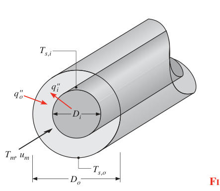
一面绝热、另一面恒温的充分发展层流：\(Nu_i\) 或 \(Nu_o\) 查表 8.2（此时只关心恒温那个非绝热面的换热系数）。
表 8.2 环形通道充分发展层流的努塞尔数（一面绝热、另一面恒温）
| \(D_i/D_o\) | \(Nu_i\) | \(Nu_o\) | 说明 |
|---|---|---|---|
| 0 | — | 3.66 | 即圆管恒壁温（式 8.55） |
| 0.05 | 17.46 | 4.06 | |
| 0.10 | 11.56 | 4.11 | |
| 0.25 | 7.37 | 4.23 | |
| 0.50 | 5.74 | 4.43 | |
| \(\approx 1.00\) | 4.86 | 4.86 | 即平行平板、一面绝热（表 8.1） |
两面都是均匀热流的充分发展层流：努塞尔数由影响系数（influence coefficients）组合而成：
影响系数（\(Nu_{ii}\)、\(Nu_{oo}\)、\(\theta_i^*\)、\(\theta_o^*\)）查表 8.3。
表 8.3 环形通道充分发展层流的影响系数（两面均匀热流）
| \(D_i/D_o\) | \(Nu_{ii}\) | \(Nu_{oo}\) | \(\theta_i^*\) | \(\theta_o^*\) |
|---|---|---|---|---|
| 0 | — | 4.364 | \(\infty\) | 0 |
| 0.05 | 17.81 | 4.792 | 2.18 | 0.0294 |
| 0.10 | 11.91 | 4.834 | 1.383 | 0.0562 |
| 0.20 | 8.499 | 4.833 | 0.905 | 0.1041 |
| 0.40 | 6.583 | 4.979 | 0.603 | 0.1823 |
| 0.60 | 5.912 | 5.099 | 0.473 | 0.2455 |
| 0.80 | 5.58 | 5.24 | 0.401 | 0.299 |
| \(\approx 1.00\) | 5.385 | 5.385 | 0.346 | 0.346 |
\(q_i''\)、\(q_o''\) 可正可负（取决于对流体加热还是放热）；\(h_i\)、\(h_o\) 有时算出负值，配上式 (8.67)、(8.68) 的符号约定，说明的是 \(T_s\) 与 \(T_m\) 的相对大小。充分发展湍流的影响系数依赖 \(Re\) 与 \(Pr\)；一阶近似下取 \(h_i \approx h_o\)，用水力直径（式 8.71）套 Dittus-Boelter 式 (8.60)。
8.7 强化换热#
内部流动换热有两条强化路径：提高换热系数 \(h\)，或者加大换热面积。常用手段（图 8.12）：
- coil-spring wire 插入物（a）：螺旋金属丝贴着内壁，制造螺旋状粗糙元强化湍流——\(h\) 增大；
- 扭带（twisted tape）（b）：周期性扭转 360° 的薄带插进管里，诱导切向速度分量、加强近壁流速——\(h\) 增大；
- 内槽管（grooved inner surface）（c）：加工出沟槽增大换热面积；
- 纵向肋/螺旋肋（longitudinal fins / helical ribs）（d）：既增大面积又提高 \(h\)。
代价都一样：压降上升、泵/风机功率上涨，强化方案必须连水力代价一起评估。
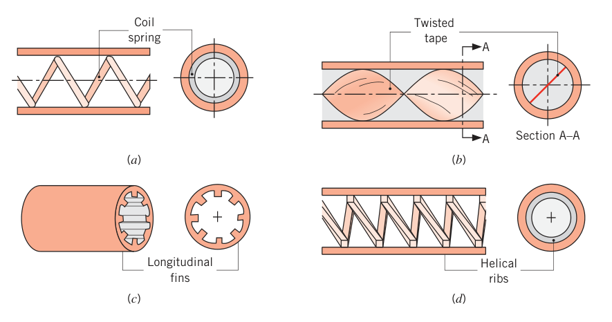
把直管绕成螺旋盘管（图 8.13），不加湍流、不加面积也能强化：离心力在流体里诱导出一对纵向涡——二次流（secondary flow）。二次流让局部 \(h\) 沿周向高度不均匀（随方位角 \(\theta\) 与 \(x\) 都变）。恒热流时 \(T_m(x)\) 仍按式 (8.40) 算；流体被加热时最高温度出现在壁面，但最大局部温度不好算（\(h\) 随 \(\theta\) 变），所以恒热流下周向平均 \(Nu\) 关联式没用；恒壁温下周向平均关联式可用，Shah 与 Joshi 推荐如下。
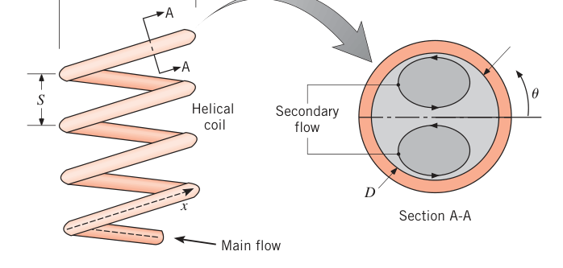
二次流同时增大摩擦与换热、缩短入口段、缩小层流与湍流换热率的差距；对盘管节距 \(S\) 不敏感。螺旋管湍流起始的临界雷诺数：
\(C\) 是盘管直径（图 8.13），\(Re_{D,c} = 2300\)。绕得紧的盘管二次流强，把转捩推迟。
充分发展层流（\(C/D \ge 3\)）的摩擦因子：
\(C/D < 3\) 的场合按 Shah 与 Joshi 的建议处理。换热系数（供式 8.27 使用）：
适用范围 \(0.005 \le Pr \le 1600\)、\(1 \le Re_D(D/C)^{1/2} \le 1000\)。
湍流盘管的摩擦关联式基于有限数据，且二次流的换热增强在湍流下很小（\(C/D \ge 20\) 时不足 10%）——盘管强化主要用于层流。层流时盘管入口段比直管短 20%–50%；湍流时流动在前半圈内就充分发展，入口段一般可忽略。
二次流还有个独特的本领：拉平流体微团的时间-温度历程。直管加热时，近轴线的微团走得快、升温少，早出来还偏凉；近壁微团走得慢、升温多——同一根加热管加工出来的流体，各微团的受热历史天差地别。盘管的二次流把流体反复搅混，所有微团的历程趋同。这就是制药、化妆品、日化这些高附加值黏性流体都常规使用盘管加工的原因。
8.8 小通道内的流动#
前面默认水力直径是常规尺寸。微流体器件（microfluidic devices）的通道极小，而式 (8.53)、(8.55) 与表 8.1–8.3 都显示 \(h\) 与水力直径成反比——通道越小，换热系数越大，这正是微通道散热的动机。但小到一定程度，前面的假设开始失效。
8.8.1 气体的微尺度对流（水力直径 0.1–100 μm）#
\(D_h \le 100\ \mu\mathrm{m}\) 时要达到 \(Re_{D,c} = 2300\) 需要不现实的高速，所以湍流气体的微尺度对流基本不用操心。真正的问题是：通道小到与气体分子平均自由程 \(\lambda_{mfp}\) 同量级时，分子与壁面的碰撞方式开始影响动量与能量的输运（3.9.1 节讲过气体夹层导热的同一效应）。本章各关联式在 \(D_h/\lambda_{mfp} \lesssim 100\) 时不再适用——常温常压空气对应 \(D_h \approx 10\ \mu\mathrm{m}\)。
分子在壁面散射的方式由两个系数刻画：动量适应系数（momentum accommodation coefficient）\(\alpha_p\)——镜面反射（速率不变、反射角等于入射角）对应 \(\alpha_p = 0\)，漫反射（无优势反射角）对应 \(\alpha_p = 1\)；工程表面的 \(\alpha_p\) 在 0.87 到 1 之间（氮、氩、CO₂ 在硅通道里为 0.75–0.85）；还有热适应系数（thermal accommodation coefficient）\(\alpha_t\)（式 3.130）。
计及分子-壁面动量与热相互作用后，圆管（直径 \(D\)）、充分发展层流、均匀热流的努塞尔数为
\(\gamma = c_p/c_v\) 是气体比热比。管径大（\(\lambda_{mfp}/D \to 0\)）时式 (8.78a) 回到 \(48/11 = 4.36\)，与式 (8.53) 一致。
大平板间距 \(a\) 形成的通道、两面均匀等热流的充分发展层流：
\(\Gamma_p\)、\(\Gamma_t\) 定义同式 (8.78c,d)，\(D\) 换成 \(D_h\)。无限大平板的 \(D_h = 2a\)，间距大（\(\lambda_{mfp}/D_h \to 0\)）时式 (8.79a) 给 \(140/17 = 8.23\)，与表 8.1 一致。以上各式只适用于不可压气流，即马赫数小（\(Ma \lesssim 0.3\)）。
8.8.2 液体的微尺度对流#
实验表明式 (8.19)、(8.22a) 对直径小到 17 μm 的圆管层流液体仍然成立（连临界雷诺数 2300 也照样有效）；对大多数液体预计可用水力直径小到 1 μm。液体微尺度对流仍是活跃的研究领域——\(D_h \lesssim 1\ \mu\mathrm{m}\) 时，第 6、8 章的解析结果要谨慎使用。
8.8.3 纳米尺度对流（水力直径不大于 100 nm）#
水力直径接近 100 nm 时，流体内部与固体壁内的分子相互作用都必须计入。纳米尺度对流是当前的研究前沿。
【例 8.7】微反应器芯片的反应物升温时间
已知（Known）：组合化学需要大量分子库供筛选，反应温度是关键变量。微反应器芯片的做法：1 mm 厚玻璃载片涂光刻胶、刻出通道、再盖一层玻璃板，形成多条矩形截面平行通道。通道深 \(a = 40\ \mu\mathrm{m}\)、宽 \(b = 160\ \mu\mathrm{m}\)、长 \(L = 20\ \mathrm{mm}\)，通道间距 \(s = 40\ \mu\mathrm{m}\)，在 20 mm × 20 mm 芯片上共 \(N = L/(w+s) = 100\) 条。两反应物初始 \(T_{m,i} = 5^\circ\mathrm{C}\)，芯片两侧边缘分别维持 \(T_1 = 125^\circ\mathrm{C}\)、\(T_2 = 25^\circ\mathrm{C}\)，每条通道对应一个独特的加工温度。进出口压差 \(\Delta p = 500\ \mathrm{kPa}\) 驱动流动。反应物与产物的热物性类似乙二醇。估计反应物升温到距目标温度 1°C 以内所需的时间。
求（Find）：反应物到达距加工温度 1°C 以内所需的时间。
示意图（Schematic）：
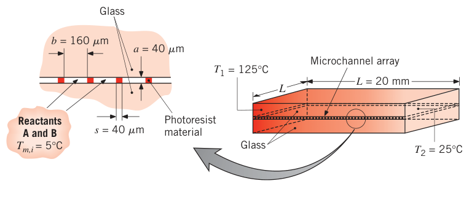
假设（Assumptions）：1. 层流；2. 芯片宽度方向温度线性分布；3. 稳态；4. 不可压液体、常物性；5. 黏性耗散可忽略。
物性（Properties）：表 A.5，乙二醇（\(\overline{T}_m = 288\ \mathrm{K}\)）：\(\rho = 1120.2\ \mathrm{kg/m^3}\)，\(c_p = 2359\ \mathrm{J/(kg\cdot K)}\)，\(\mu = 2.82\times 10^{-2}\ \mathrm{N\cdot s/m^2}\)，\(k = 247\times 10^{-3}\ \mathrm{W/(m\cdot K)}\)，\(Pr = 269\)。（\(\overline{T}_m = 338\ \mathrm{K}\)）：\(\rho = 1085\ \mathrm{kg/m^3}\)，\(c_p = 2583\ \mathrm{J/(kg\cdot K)}\)，\(\mu = 0.427\times 10^{-2}\ \mathrm{N\cdot s/m^2}\)，\(k = 261\times 10^{-3}\ \mathrm{W/(m\cdot K)}\)，\(Pr = 45.2\)。
分析（Analysis）：把换热与流动行为按两个极端加工温度"夹逼"评估。
单条微通道的周长与水力直径：
黏度随温度变化剧烈，加工温度最高的通道流量最大。先假设入口段很短（后面验证），用充分发展摩擦因子估流量。\(b/a = 4\) 时由表 8.1 取 \(f = 73/Re_{D_h}\)，代入压降式 (8.22a)（物性取 \(T = 125^\circ\mathrm{C}\)）：
深度层流。入口段长度（式 8.3 与 8.23）：
两个入口段都不到总长（20 mm）的 10%，用充分发展 \(f\) 是合理的。质量流量：
求平均温度升到 \(T_{m,c} = 124^\circ\mathrm{C}\)（距壁温 1°C）的位置 \(x_c\)。热入口段短，平均换热系数直接取充分发展值：\(b/a = 4\)、均匀壁温时由表 8.1 取 \(Nu_D = hD_h/k = 4.44\)：
换热系数大得惊人——这正是微通道的看点。由式 (8.42) 反解位置：
所需时间：
最低加工温度（25°C）的通道同法计算：\(u_m = 0.0995\ \mathrm{m/s}\)，\(Re_D = 0.253\)，\(x_{fd,h} = 8.09\times 10^{-7}\ \mathrm{m}\)，\(x_{fd,t} = 0.218\times 10^{-3}\ \mathrm{m}\)，\(h = 1.71\times 10^4\ \mathrm{W/(m^2\cdot K)}\)，\(x_c = 0.73\times 10^{-3}\ \mathrm{m}\)，\(t_c = 0.007\ \mathrm{s}\)。
点评（Comments）：
- 玻璃总厚 2 mm 是通道深的 50 倍，玻璃导热系数（约 1.4 W/(m·K)，表 A.3）是流体的 5 倍——通道里那点流体对芯片线性温度分布的影响可忽略。每条通道上、下表面间温差约 \(\Delta T = (T_1 - T_2)\,b/L = (125 - 25)^\circ\mathrm{C}\times(160\times 10^{-6}\ \mathrm{m})/(20\times 10^{-3}\ \mathrm{m}) = 0.8^\circ\mathrm{C}\)。
- 把式 (8.42) 在 \(0 \le x \le L\) 上解出平均温度沿程变化：两个极端温度通道的 \(T_m(x)\) 曲线都先陡后平，向各自壁温指数逼近（\(T_s = 125^\circ\mathrm{C}\) 的通道在约 8 mm 处进入 1°C 界内；\(T_s = 25^\circ\mathrm{C}\) 的通道在约 0.7 mm 处）。
8.9 对流传质#
内部流动的对流传质与传热完全平行：气体流过内壁润湿或可升华的管子，蒸发或升华发生，浓度边界层生长。平均组分密度 \(\rho_{A,m}\) 扮演 \(T_m\) 的角色。任意截面 \(A_c\)、组分 A 的质量流量 \(\dot m_A = \rho_{A,m} u_m A_c\)，定义：
圆管：
浓度边界层同样分入口段与充分发展区：层流浓度入口段 \(x_{fd,c}\) 用式 (8.23) 把 \(Pr\) 换成 \(Sc\)（施密特数）；湍流一阶近似仍用式 (8.4)。层流与湍流的热充分发展条件（类比式 8.28）为
其中表面组分密度 \(\rho_{A,s}\) 均匀。
表面的局部组分质量通量：
表面积 \(A_s\) 的总组分传递速率用对数平均浓度差（类比式 8.44）：
浓度差定义为 \(\Delta\rho_A = \rho_{A,s} - \rho_{A,m}\)。对管道控制体做组分 A 守恒，还有与式 (8.34) 对应的形式：
\(\dot m/\rho = u_m A_c\) 是体积流量。平均蒸气密度沿程变化（类比式 8.42）：
\(P\) 是管道周长。传质系数来自舍伍德数（Sherwood number）关联式 \(Sh_D = h_m D/D_{AB}\)：把换热关联式里的 \(Nu_D\)、\(Pr\) 分别换成 \(Sh_D\)、\(Sc\)，就是对应的传质式——热质传递类比（6.14 节）在内部流动里的落地。圆管、均匀表面蒸气密度、充分发展层流：
充分发展湍流（Dittus-Boelter 的传质版）：
传质的微尺度条件与 8.8 节讨论的传热情形类似。
拓展：热-质传递类比的对应关系
类比翻译字典：\(T_s \leftrightarrow \rho_{A,s}\)（表面值）、\(T_m \leftrightarrow \rho_{A,m}\)（截面平均值）、\(h \leftrightarrow h_m\)、\(Nu_D \leftrightarrow Sh_D\)、\(Pr \leftrightarrow Sc\)、\(cp \leftrightarrow 1\)（传质不用比热）、\(\dot m c_p \leftrightarrow \dot m/\rho\)（体积流量）、\(\Delta T_{lm} \leftrightarrow \Delta\rho_{A,lm}\)。所以整根管的传质问题，把传热五件套（8.34、8.37、8.42、8.43、8.44）逐项翻译即可，连"对数平均"都要一起搬过去。
【例 8.8】管壁氨膜的气流吹脱
已知（Known）：管内壁（\(D = 10\ \mathrm{mm}\)，\(L = 1\ \mathrm{m}\)）附着一层薄氨（NH₃）液膜，用干空气以 \(\dot m = 3\times 10^{-4}\ \mathrm{kg/s}\) 吹过把它除去。管与空气都是 25°C。
求（Find）：管内流动的平均对流传质系数。
示意图（Schematic）：
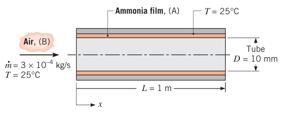
假设（Assumptions）：1. 氨膜薄、表面光滑；2. 热-质传递类比适用。
物性（Properties）：表 A.4，空气（25°C）：\(\nu = 15.7\times 10^{-6}\ \mathrm{m^2/s}\)，\(\mu = 183.6\times 10^{-7}\ \mathrm{N\cdot s/m^2}\)。表 A.8，氨-空气（25°C）：\(D_{AB} = 0.28\times 10^{-4}\ \mathrm{m^2/s}\)，\(Sc = \nu/D_{AB} = 0.56\)。
分析（Analysis）：雷诺数（式 8.6）：
层流。流动入口段（式 8.3）：
浓度入口段（式 8.23 的传质版）：
\(x_{fd,h} \approx L\) 且 \(x_{fd,c} < L\)：组合入口段。氨膜表面维持恒定氨蒸气密度，类比恒壁温——用式 (8.58) 的传质版（\(Pr\) 换 \(Sc\)），其中
点评（Comments）：若按全管充分发展（\(Sh_D = 3.66\)）计算，结果比上面的 4.74 小 23%——组合入口段的修正不可忽略。
8.10 小结#
内部流动换热问题的求解套路固定成四步：判流态（层流 \(Re_D < 2300\)，湍流 \(Re_D \gtrsim 10^4\)，中间过渡区）；定入口段长度（式 8.3、8.23 或湍流 \(\approx 10D\)）；确定要局部值还是全管平均值，选关联式；配能量平衡（恒热流式 8.34/8.40，恒壁温式 8.42/8.43）解温度与换热量。表 8.4 把圆管关联式汇总一遍，做题时按条件对号入座。
表 8.4 圆管流动对流关联式汇总
| 关联式 | 编号 | 适用条件 |
|---|---|---|
| \(f = 64/Re_D\) | (8.19) | 层流，充分发展 |
| \(Nu_D = 4.36\) | (8.53) | 层流，充分发展，均匀热流 |
| \(Nu_D = 3.66\) | (8.55) | 层流，充分发展，均匀壁温 |
| \(\overline{Nu}_D = 3.66 + 0.0668\,Gz_D/(1 + 0.04\,Gz_D^{2/3})\) | (8.57) | 层流，热入口段（或 \(Pr \gtrsim 5\) 的组合入口段），均匀壁温，\(Gz_D = (D/x)Re_D Pr\) |
| \(\overline{Nu}_D\)（Baehr–Stephan，见 8.4.2 节） | (8.58) | 层流，组合入口段，\(Pr \gtrsim 0.1\)，均匀壁温 |
| \(1/\sqrt f = -2.0\log[e/D/3.7 + 2.51/(Re_D\sqrt f)]\) | (8.20) | 湍流，充分发展，光滑或粗糙管 |
| \(f = (0.790\ln Re_D - 1.64)^{-2}\) | (8.21) | 湍流，充分发展，光滑管，\(3000 \le Re_D \le 5\times 10^6\) |
| \(Nu_D = 0.023\, Re_D^{4/5} Pr^n\) | (8.60) | 湍流，充分发展，\(0.6 \le Pr \le 160\)，\(Re_D \gtrsim 10^4\)，\(L/D \gtrsim 10\)，加热 \(n = 0.4\)、冷却 \(n = 0.3\) |
| \(Nu_D = 0.027\, Re_D^{4/5} Pr^{1/3}(\mu/\mu_s)^{0.14}\) | (8.61) | 湍流，充分发展，\(0.7 \le Pr \le 16\,700\)，\(Re_D \gtrsim 10^4\)，\(L/D \gtrsim 10\) |
| \(Nu_D = (f/8)(Re_D - 1000)Pr / [1 + 12.7(f/8)^{1/2}(Pr^{2/3} - 1)]\) | (8.62) | 湍流，充分发展，\(0.5 \le Pr \le 2000\)，\(3000 \le Re_D \le 5\times 10^6\)，\(L/D \gtrsim 10\) |
| \(Nu_D = 4.82 + 0.0185\,(Re_D Pr)^{0.827}\) | (8.64) | 液态金属，湍流，充分发展，均匀热流，\(3.6\times 10^3 \le Re_D \le 9.05\times 10^5\)，\(3\times 10^{-3} \le Pr \le 5\times 10^{-2}\)，\(10^2 \le Pe_D \le 10^4\) |
| \(Nu_D = 5.0 + 0.025\,(Re_D Pr)^{0.8}\) | (8.65) | 液态金属，湍流，充分发展，均匀壁温，\(Re_D Pr \gtrsim 100\) |
使用规则（原表脚注的干货）：传质关联式把 \(Nu_D\)、\(Pr\) 换成 \(Sh_D\)、\(Sc\)；式 (8.53)、(8.55)、(8.60)–(8.62)、(8.64)、(8.65) 物性按 \(T_m\)，式 (8.19)–(8.21) 按 \(T_f = (T_s + T_m)/2\)，式 (8.57)、(8.58) 按 \(\overline{T}_m = (T_{m,i} + T_{m,o})/2\)；式 (8.20) 适合光滑与粗糙管，式 (8.21) 只适合光滑管；一阶近似下 \(L/D \gtrsim 10\) 时式 (8.60)、(8.61)、(8.62) 也可当整管平均 \(\overline{Nu}_D\) 用，物性取 \(\overline{T}_m\)；非圆管 \(Re_D = u_m D_h/\nu\)、\(D_h = 4A_c/P\)、\(u_m = \dot m/(\rho A_c)\)，充分发展层流查表 8.1，湍流一阶近似用式 (8.60)。
原书章末自测问题（8.10 节复习用）
- 流动入口段、热入口段各有什么特征？两者的入口段长度相等吗？不等的话由什么决定？
- 充分发展流动的流体力学特征是什么？壁面粗糙度如何影响充分发展流动的摩擦因子？
- 平均温度（整体温度）与内部流动的哪个重要特征量绑定？
- 充分发展流动的热学特征是什么？
- 流体以均匀温度进管、与壁面换热时，换热系数沿管长怎么变？
- 均匀表面热流下，流体平均温度在入口段与充分发展区分别怎么随距离变？表面温度呢？
- 均匀表面温度下，平均温度怎么随距离变？表面热流怎么变？
- 恒壁温计算总换热量，为什么用对数平均温差而不是算术平均温差？
- 恒热流的总换热量用哪两个式子？恒壁温的呢？
- 什么条件下内部流动的努塞尔数是与 \(Re\)、\(Pr\) 无关的常数？
- 整管平均努塞尔数比充分发展值大、相等还是小？为什么？
- 非圆管的特征长度怎么定义？
- 浓度入口段的特征是什么？
- 传质充分发展流动的特征是什么？
- 对流传质关联式怎么从传热关联式推出？
坑与陷阱#
8 个容易踩的坑
- 雷诺数没有"来流"：内部流动的 \(Re_D\) 只能用平均流速 \(u_m\)（式 8.1）或流量 \(Re_D = 4\dot m/(\pi D\mu)\)（式 8.6）算。非圆管把 \(D\) 换成 \(D_h = 4A_c/P\)。拿"入口速度剖面里的最大速度"去算 \(Re\)，层流湍流直接判错。
- 达西摩擦因子与范宁摩擦系数差 4 倍：穆迪图与式 (8.19)–(8.21) 给的都是达西 \(f\)；\(C_f = f/4\)（式 8.17）。查了范宁图又套达西公式，泵功率差 4 倍。
- 物性取温有分工：\(Nu\) 关联式取 \(T_m\)；摩擦因子关联式取 \(T_f = (T_s + T_m)/2\)；入口段关联式（8.57、8.58）取 \(\overline{T}_m\)；Sieder-Tate 与式 (8.59) 的 \(\mu_s\) 取 \(T_s\)。例 8.6 里 \(c_p\) 按整管平均温度、局部 \(h\) 按当地温度取——一个题两套温度，别抄成一套。
- 恒热流与恒壁温不共存：先判定题目属于哪类边界（电加热/辐照 → 恒热流；相变/大热容外部流体 → 恒壁温），再选温差关系。恒热流 \(T_m\) 线性、\((T_s - T_m)\) 充分发展区常数；恒壁温 \(T_m\) 指数逼近 \(T_s\)、\(q_s''\) 沿程衰减。选错类型，后面全错。
- 恒壁温必须用对数平均温差：式 (8.43) 的 \(\Delta T_{lm}\) 由指数衰减的精确积分而来，算术平均 \(\Delta T_{am}\) 只在 \(\Delta T_o/\Delta T_i \to 1\) 时勉强可用——例 8.3 里算术平均 64°C、对数平均 61.6°C，用错的 \(h\) 偏 4%。同理恒热流时别把 \(q_s''(L)\) 当沿程常数（例 8.6 点评 3，总散热会少算 120 W）。
- 湍流关联式的指数与边界：Dittus-Boelter 加热 \(n = 0.4\)、冷却 \(n = 0.3\)（看的是流体被加热还是冷却）；只在 \(Re_D \gtrsim 10^4\)、\(L/D \gtrsim 10\) 用。过渡区（\(2300 \le Re_D \le 10^4\)）硬套完全湍流关联式会高估 \(h\)——换 Gnielinski（下限 3000）。
- 热充分发展 ≠ 温度不变：不变的是无量纲温度剖面的形状；\(T_m\) 只要有换热就沿程变。恒热流时 \((T_s - T_m)\) 是常数（\(\Delta T\) 不衰减）；恒壁温时 \(q_s''\) 沿程衰减。
- 局部值与平均值别混用：求出口壁温用局部 \(h\)（配牛顿冷却 + 当地 \(T_m\)）；求全管换热量用 \(\overline{Nu}\)（且恒壁温必须配 \(\Delta T_{lm}\)）。\(\overline{Nu}\) 永远大于充分发展值（式 8.63），但 \(L/D \gtrsim 60\) 的湍流短管差别可忽略。层流常数 \(Nu\) 也只对圆管成立：方形 2.98–3.61、三角形 2.49–3.11（表 8.1），且 \(Nu\) 大不等于换热强——截面变了 \(D_h\) 与湿周都变。
速览#
- 内部流动三步定位：判流态（\(Re_{D,c} = 2300\)）→ 算入口段（层流 \(x_{fd,h}/D \approx 0.05Re_D\)、\(x_{fd,t}/D \approx 0.05Re_D Pr\)；湍流都 \(\approx 10\)）→ 选充分发展或入口段公式。
- 平均流速 \(u_m = \dot m/(\rho A_c)\)；充分发展层流速度剖面抛物线 \(u = 2u_m[1-(r/r_o)^2]\)，轴线速度是平均值两倍，\(u_m = -(r_o^2/8\mu)(dp/dx)\)。
- 摩擦：层流 \(f = 64/Re_D\)；湍流查穆迪图 / Colebrook 式 (8.20) / Petukhov 式 (8.21)；压降 \(\Delta p = f(\rho u_m^2/2D)L\)；泵功率 \(P = \Delta p\,\dot\forall\)。达西 \(f = 4\times\) 范宁 \(C_f\)。
- 平均温度 \(T_m\) 是能量加权平均（式 8.25/8.26），是内流的"自由流温度"；牛顿冷却 \(q_s'' = h(T_s - T_m)\)；有换热 \(T_m\) 必沿程变。
- 热充分发展 = 无量纲温度剖面形状不变 → 局部 \(h\) 为常数。层流充分发展 \(Nu\) 是常数：恒热流 4.36（式 8.53）、恒壁温 3.66（式 8.55），与 \(Re\)、\(Pr\) 无关。
- 能量平衡两把钥匙：总管 \(q_{conv} = \dot m c_p(T_{m,o} - T_{m,i})\)（式 8.34）；微分 \(dT_m/dx = (P/\dot m c_p)h(T_s - T_m)\)（式 8.37）。
- 恒热流：\(T_m(x)\) 线性（式 8.40），\(q_{conv} = q_s''PL\)；恒壁温：\(\Delta T\) 指数衰减（式 8.42），\(q_{conv} = \bar h A_s \Delta T_{lm}\)（式 8.43、8.44）；外部流体把 \(T_s \to T_\infty\)、\(\bar h \to \bar U\)。
- 层流入口段（恒壁温）：热入口段或 \(Pr \gtrsim 5\) 用 Hausen 式 (8.57)；组合入口段 \(Pr \gtrsim 0.1\) 用 Baehr–Stephan 式 (8.58)；特征数 \(Gz_D = (D/x)Re_D Pr\)；液体黏度修正 \((\mu/\mu_s)^{0.14}\)（式 8.59）。
- 湍流：Dittus-Boelter 式 (8.60)（\(n = 0.4\) 加热 / \(0.3\) 冷却，\(Re \gtrsim 10^4\)）、Sieder-Tate 式 (8.61)（大物性变化）、Gnielinski 式 (8.62)（最准，\(3000 \le Re \le 5\times 10^6\)）；液态金属用 \(Pe_D\) 关联式 (8.64)、(8.65)。
- 非圆管 \(D_h = 4A_c/P\)（环形通道 \(D_h = D_o - D_i\)），湍流直接套圆管式，层流查表 8.1；环形套管两面各算 \(h_i\)、\(h_o\)，双面恒热流用影响系数式 (8.72)/(8.73)；强化换热靠 \(h\uparrow\) 或面积 \(\uparrow\)（弹簧丝、扭带、内槽、螺旋肋、盘管二次流），代价是压降。
术语速查#
| 英文 | 中文 | 一句话 |
|---|---|---|
| internal flow | 内部流动 | 流体被表面约束的流动，边界层最终汇合 |
| hydrodynamic entrance region | 流动入口区 | 边界层发展到管轴汇合的区域 |
| fully developed flow | 充分发展流动 | 速度剖面（或无量纲温度剖面）不再随 \(x\) 变的状态 |
| hydrodynamic entry length | 流动入口段长度 | 从入口到速度剖面定型的距离 \(x_{fd,h}\) |
| thermal entry length | 热入口段长度 | 从换热起点到温度剖面相对形状定型的距离 \(x_{fd,t}\) |
| mean (bulk) temperature | 平均温度（整体温度） | 能量加权的截面平均温度 \(T_m\)，内流的参考温度 |
| Hagen–Poiseuille flow | 哈根–泊肃叶流动 | 圆管层流充分发展流动，抛物线速度剖面的经典解 |
| Moody (Darcy) friction factor | 穆迪（达西）摩擦因子 | \(f = -(dp/dx)D/(\rho u_m^2/2)\)，层流 \(= 64/Re_D\) |
| Fanning friction factor | 范宁摩擦系数 | \(C_f = \tau_s/(\rho u_m^2/2) = f/4\)，与达西因子差 4 倍 |
| Moody diagram | 穆迪图 | 摩擦因子对 \(Re_D\) 与相对粗糙度的经典图线 |
| Newton's law of cooling | 牛顿冷却公式 | \(q_s'' = h(T_s - T_m)\)，内流换热速率方程 |
| constant surface heat flux | 恒定表面热流 | 电加热/均匀辐照类边界，\(T_m\) 线性上升 |
| constant surface temperature | 恒定表面温度 | 相变/恒温热汇类边界，\(T_m\) 指数逼近 |
| log mean temperature difference | 对数平均温差 | 恒壁温整管换热的正确温差平均 \(\Delta T_{lm}\) |
| overall heat transfer coefficient | 总传热系数 | 跨管壁两流体间换热的复合系数 \(\bar U\) |
| Graetz number | 格雷茨数 | \(Gz_D = (D/x)Re_D Pr\)，入口段换热的无量纲坐标 |
| unheated starting length | 未加热起始段 | 换热起点前的绝热段，使速度剖面先充分发展 |
| combined entry length | 组合入口段 | 速度与温度剖面同时发展的入口区 |
| hydraulic diameter | 水力直径 | \(D_h = 4A_c/P\)，非圆流道的等效直径 |
| concentric tube annulus | 同心套管环形通道 | 内外管之间的环隙流道，两面可独立定热条件 |
| influence coefficient | 影响系数 | 双面恒热流环形通道 \(Nu\) 组合中的系数 \(Nu_{ii}\)、\(\theta_i^*\) 等 |
| secondary flow | 二次流 | 盘管离心力诱导的一对纵向涡，混合流体 |
| momentum/thermal accommodation coefficient | 动量/热适应系数 | 气体分子与壁面碰撞性质的刻画 \(\alpha_p\)、\(\alpha_t\) |
| Sherwood number | 舍伍德数 | \(Sh_D = h_m D/D_{AB}\)，传质的"努塞尔数" |
| heat and mass transfer analogy | 热-质传递类比 | 把 \(Nu \to Sh\)、\(Pr \to Sc\) 直接翻译出传质关联式 |